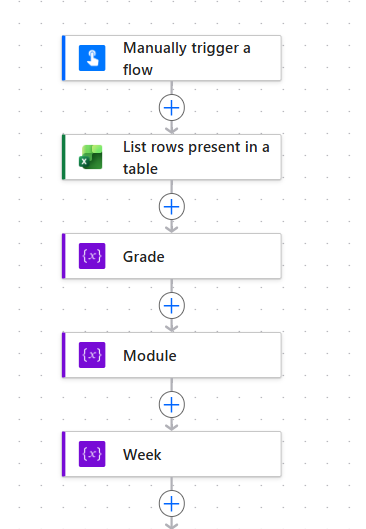
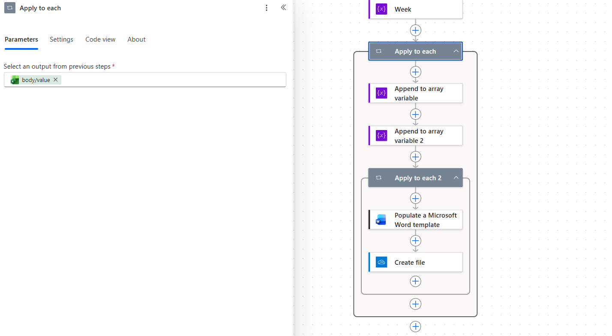

The challenge
Large batches of educational documents required repetitive manual preparation, reference matching, hyperlinking, template alignment, and quality checks before they could be reused downstream.
INTELLIGENT AUTOMATION · PYTHON · DOCUMENT TRANSFORMATION
I designed an automation workflow that converted labor-intensive document processing into a repeatable pipeline for structured, reusable content—reducing manual effort and delivering $222K in documented cost savings.
Large batches of educational documents required repetitive manual preparation, reference matching, hyperlinking, template alignment, and quality checks before they could be reused downstream.
I translated the manual process into automation rules, built and refined Python-based transformations, coordinated workflow steps, validated outputs, documented maintenance risks, and designed a repeatable handoff process.
The solution reduced high-volume manual processing, improved consistency, created reusable structured outputs, and delivered $222K in documented cost savings.
AUTOMATION ARCHITECTURE
The production workflow combined pattern detection, structured lookup data, document transformation, workflow orchestration, and validation.
PATTERN RECOGNITION
The scripts recognized multiple reference patterns, including single references, ranges, language-specific variants, and prefixed values. This allowed the workflow to process content without relying on one rigid text pattern.
LOOKUP MAPPING
Document references were matched against controlled lookup data so the workflow could apply the correct destination consistently instead of relying on manual searching.
FALSE-POSITIVE CONTROL
The automation included skip logic for known headers and non-content labels, reducing incorrect transformations and preserving document meaning.
ACCESSIBILITY & TEMPLATE ALIGNMENT
Supporting steps standardized approved styles, headers, footers, and document presentation while leaving selected accessibility checks for human review when source files were inconsistent.
BEHIND THE AUTOMATION
Power Automate orchestrated a single end-to-end workflow, beginning with structured row intake and continuing through grouping, iteration, Word template population, and file creation. The two screenshots below show different sections of that same flow. Organization-specific names, paths, URLs, program identifiers, and production file details have been removed.


PYTHON
reference_pattern = r"(?<!\d)\b(p{1,2}|págs?|pág)\.\s*([A-Z]?\d+)(...)?\b"
def process_paragraph(paragraph, lookup_table):
text = paragraph.text
matches = list(re.finditer(reference_pattern, text))
for match in matches:
reference = match.group(2)
row = lookup_table[lookup_table["Reference"] == reference]
if not row.empty and pd.notna(row.iloc[0]["Destination"]):
destination = row.iloc[0]["Destination"]
add_hyperlink(paragraph, match.group(0), destination)The production script also handled tables, ranges, multilingual variants, filename-driven lookup selection, output naming, and exceptions. Company paths, internal field names, and destination URLs have been replaced with generic equivalents.
WORD VBA
Sub ApplyApprovedTemplateStyles()
Const TEMPLATE_PATH As String = "[approved-template]"
Const TARGET_FOLDER As String = "[processed-documents]"
f = Dir$(TARGET_FOLDER & "\*.docx")
Do While f <> ""
Set doc = Documents.Open(TARGET_FOLDER & "\" & f)
doc.CopyStylesFromTemplate TEMPLATE_PATH
doc.Save
doc.Close
f = Dir$
Loop
End SubSupporting macros also normalized reference prefixes and copied approved header/footer assets. Local user paths, template names, product labels, and project-specific terms have been removed.
WHY THIS WAS HARD
Different languages used different abbreviations, accented characters, prefixes, and range conventions.
The workflow needed to change content without breaking tables, sections, headers, footers, or existing styles.
Document naming conventions and lookup structures had to stay synchronized for automated mapping to work reliably.
Some accessibility and formatting decisions could not be safely automated because source documents varied too much.
HOW I BUILT IT
BUSINESS VALUE
WHAT I LEARNED
Parsing logic was only one part of the solution. The workflow also depended on consistent filenames, reliable lookup data, clear validation rules, controlled exceptions, and well-defined handoffs.
That changed how I think about automation: the strongest solutions do not remove people from the process entirely. They remove repetitive effort so people can focus on the exceptions and decisions that actually require judgment.
EXPLORE MORE